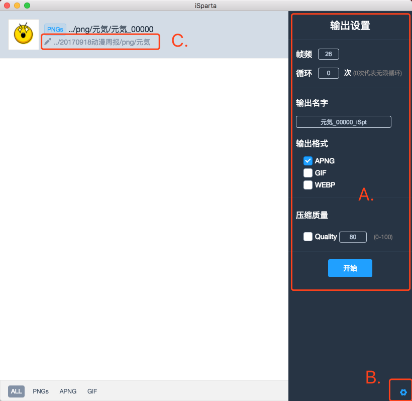

一、下载iSparta
在此链接：https://github.com/iSparta/iSparta/releases 下载对应电脑系统的 iSparta ，也可以通过本文档附带的“iSparta安装包”来获取，并安装好。目前支持windows、mac、linux 三个系统版本。安装后打开iSparta。
二、导入文件
-
1、文件序列化：将需转换的每一帧PNG（每一帧的图片尺寸必须相同）的文件名按照序列来命名（如xxx01.png、xxx02.png、xxx03.png…xxx11.png）。注：数字的位数要保持一致，比如有15帧，第一帧的数字应该是01，以此类推
-
导入文件：将序列化好的文件（或者包含序列化好的文件的文件夹）拖到 iSpata 面板，或者直接点击面板中心区选择目录。
三、 参数配置
把 png 图片拖进去后，“输出设置”面板也就是下图的 A 区会自动出现，也可以手动点击右下角的设置icon，也就是下图的 B 区打开。可配置参数为：帧频（默认26帧/秒）、循环次数（默认无限循环）、输出文字、输出格式、压缩质量（默认为80%）。
（1） 这些配置项更改后均会保存起来，下次打开应用程序时会恢复上一次的设置。
（2）其中，压缩比越高输出的质量越好，如果对输出的图片质量不满意，可以尝试修改压缩比来提高输出的图片质量。
（3）如果某些帧之间需要延时，可以将需要延时的帧图片复制几张（按延时长短决定复制数量），然后再重新按序列命名图片。
（4）输出目录默认是在每帧 png 图片所在的目录。也可以通过点击 C 区重新选择输出目录。

四、 输出
点击“开始”按钮，转换过程会花费一定的时间，请耐心等待。面板会提示转换进度。
五、 查看
在相应的输出目录找到输出的APNG图片，使用firefox浏览器打开该图片即可看到图片动态效果。
或者使用浏览器（chrome）打开APNG在线查看器，将生成的apng图片拖入即可查看。